Series Expansions¶
The series module implements series expansions as a function and many related functions.
Limits¶
The main purpose of this module is the computation of limits.
- sympy.series.limits.limit(e, z, z0, dir='+')¶
Compute the limit of e(z) at the point z0.
z0 can be any expression, including oo and -oo.
For dir=”+” (default) it calculates the limit from the right (z->z0+) and for dir=”-” the limit from the left (z->z0-). For infinite z0 (oo or -oo), the dir argument doesn’t matter.
Examples:
>>> from sympy import limit, sin, Symbol, oo >>> from sympy.abc import x >>> limit(sin(x)/x, x, 0) 1 >>> limit(1/x, x, 0, dir="+") oo >>> limit(1/x, x, 0, dir="-") -oo >>> limit(1/x, x, oo) 0
Strategy:
First we try some heuristics for easy and frequent cases like “x”, “1/x”, “x**2” and similar, so that it’s fast. For all other cases, we use the Gruntz algorithm (see the gruntz() function).
As is explained above, the workhorse for limit computations is the function gruntz() which implements Gruntz’ algorithm for computing limits.
The Gruntz Algorithm¶
This section explains the basics of the algorithm used for computing limits. Most of the time the limit() function should just work. However it is still useful to keep in mind how it is implemented in case something does not work as expected.
First we define an ordering on functions. Suppose  and 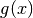 are two
real-valued functions such that 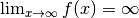 and
similarly
and 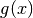 are two
real-valued functions such that 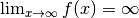 and
similarly  . We shall say that
dominates
, written 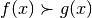, if for all 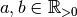 we have
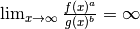.
We also say that and
are of the same comparability class if neither nor
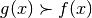 and shall denote it as
. We shall say that
dominates
, written 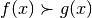, if for all 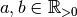 we have
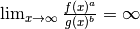.
We also say that and
are of the same comparability class if neither nor
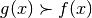 and shall denote it as  .
.
Note that whenever then
 , and we shall use this to extend the definition of
to all functions which tend to
, and we shall use this to extend the definition of
to all functions which tend to  or 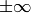 as
or 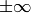 as  .
Thus we declare that 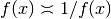 and 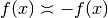.
.
Thus we declare that 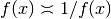 and 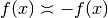.
It is easy to show the following examples:
- 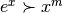
- 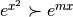

- 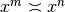
 .
.
From the above definition, it is possible to prove the following property:
Suppose
,
are functions of
,
and 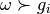 for all
. Let 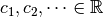 with 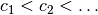.
Then
.
For  and as above we also have the following easy result:
and as above we also have the following easy result:
for
for
, where the sign is determined by the (eventual) sign of
.


Using these results yields the following strategy for computing
 :
:
- Find the set of most rapidly varying subexpressions (MRV set) of .
That is, from the set of all subexpressions of , find the elements that
are maximal under the relation .
- Choose a function that is in the same comparability class as
the elements in the MRV set, such that .
- Expand as a series in in such a way that the antecedents of
the above theorem are satisfied.
- Apply the theorem and conclude the computation of
, possibly by recursively working on
 .
.
Notes¶
This exposition glossed over several details. Many are described in the file gruntz.py, and all can be found in Gruntz’ very readable thesis. The most important points that have not been explained are:
- Given f(x) and g(x), how do we determine if ,
or
 ?
? - How do we find the MRV set of an expression?
- How do we compute series expansions?
- Why does the algorithm terminate?
If you are interested, be sure to take a look at Gruntz Thesis.
More Intuitive Series Expansion¶
This is achieved by creating a wrapper around Basic.series(). This allows for the use of series(x*cos(x),x), which is possibly more intuative than (x*cos(x)).series(x).
Examples¶
>>> from sympy import Symbol, cos, series
>>> x = Symbol('x')
>>> series(cos(x),x)
1 - x**2/2 + x**4/24 + O(x**6)
Order Terms¶
This module also implements automatic keeping track of the order of your expansion.
Examples¶
>>> from sympy import Symbol, Order
>>> x = Symbol('x')
>>> Order(x) + x**2
O(x)
>>> Order(x) + 1
1 + O(x)
Series Acceleration¶
TODO
Residues¶
TODO